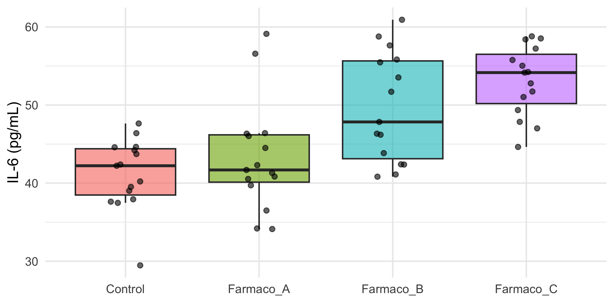
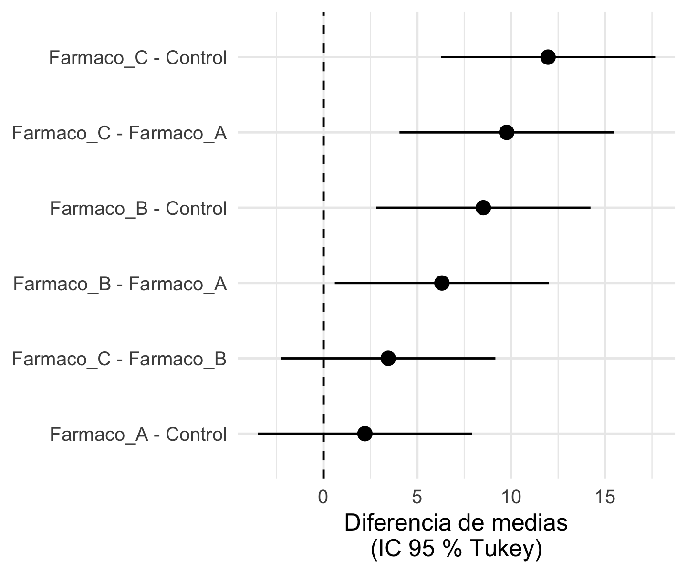
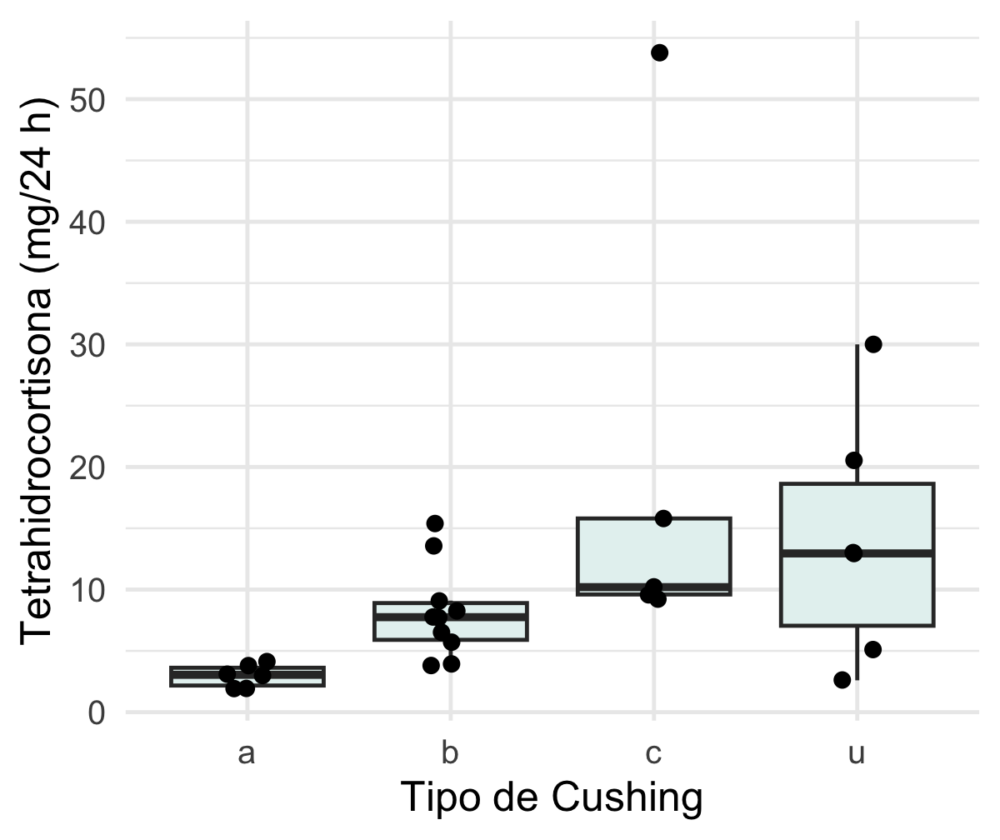

install.packages(c("MASS", "rstatix", "DescTools", "PMCMRplus",
"emmeans", "ggplot2", "dplyr", "tidyr"))¿Entre qué grupos está la diferencia y cómo evitar falsos positivos?
2026-09-24
R;Esta presentación se basa en el capítulo 18 del libro Bioestadística en R para ciencias de la salud. Al revisarlo por enésima vez econtré: errores de fundamento, fórmulas e interpretación.(1)
A lo largo de la presentación hay:
El capítulo dice: lo que aparece en el texto original.
Lo correcto: la versión corregida y, cuando se puede, la demostración en R.
Al final hay una tabla con todas las correcciones.
Datos 1 · simulados. IL‑6 (pg/mL) en un grupo control y tres fármacos. Cumplen normalidad y varianzas iguales.
Datos 2 · reales. Cushings (2): tetrahidrocortisona urinaria según el tipo de síndrome de Cushing (a = adenoma, b = hiperplasia bilateral, c = carcinoma, u = desconocido). n pequeño, asimetría y varianzas distintas.
El ANOVA y la prueba de Kruskal‑Wallis evalúan una hipótesis global:
\[H_0:\ \mu_1 = \mu_2 = \dots = \mu_k \qquad H_A:\ \text{al menos una media es diferente}\]
Un p < 0.05 nos dice que hay diferencias, pero no entre qué grupos. Para eso necesitamos comparaciones por pares.

¿Control ≠ Fármaco A? ¿Fármaco B ≠ Fármaco C? La gráfica sugiere, la prueba decide.
Prueba post hoc
Procedimiento diseñado para comparar grupos después de una prueba ómnibus (ANOVA o Kruskal‑Wallis). Tiene su propio estadístico y su propia distribución de referencia, que ya toma en cuenta cuántas comparaciones se hacen.
Ejemplos: Tukey, Dunnett, Scheffé, Games‑Howell, Dunn, Nemenyi.
Corrección por comparaciones múltiples
Regla que ajusta los valores de p (o el umbral α) de un conjunto de pruebas que ya se hicieron, para controlar la tasa de falsos positivos.
Sirve para cualquier conjunto de pruebas: pares de grupos, varios desenlaces, miles de genes.
Ejemplos: Bonferroni, Holm, Hochberg, Hommel, Benjamini‑Hochberg.
Con k grupos, el número de comparaciones por pares es
\[m = \frac{k(k-1)}{2}\]
| Grupos (k) | 3 | 4 | 5 | 6 | 8 | 10 |
|---|---|---|---|---|---|---|
| Comparaciones (m) | 3 | 6 | 10 | 15 | 28 | 45 |
Con 4 grupos (nuestros datos de IL‑6) hay 6 comparaciones: Control–A, Control–B, Control–C, A–B, A–C y B–C.
Si cada prueba usa α = 0.05, la probabilidad de al menos un falso positivo en m pruebas independientes es la tasa de error por familia (familywise error rate, FWER):
\[\text{FWER} = 1 - (1 - \alpha)^m\]
m FWER
1 1 0.0500
2 3 0.1426
3 6 0.2649
4 10 0.4013
5 15 0.5367
6 20 0.6415
7 45 0.9006Con 15 comparaciones, la probabilidad de encontrar “algo” sin que exista nada supera el 50 %: es como lanzar una moneda.
Cuatro grupos idénticos (H0 verdadera). Hacemos las 6 pruebas t sin corregir y contamos cuántas veces aparece al menos un p < 0.05.
[1] 0.1945El FWER real (~20 %) es menor que el teórico (26 %) porque las comparaciones comparten grupos y no son independientes; aun así, es cuatro veces el 5 % prometido.
| H0 verdadera | H0 falsa | |
|---|---|---|
| No rechazo | ✔ | Error tipo II |
| Rechazo (“descubrimiento”) | V = falsos positivos | ✔ |
Controlar el error tipo I exige umbrales más estrictos, lo que aumenta el error tipo II (no detectar diferencias reales).
Todas las pruebas que veremos buscan el mismo equilibrio:
controlar los falsos positivos perdiendo la menor potencia posible.
La elección correcta depende de cuántas y cuáles comparaciones nos interesan realmente.
Regla práctica: define las comparaciones de interés antes de ver los datos. Menos comparaciones = más potencia.
| Prueba post hoc | Corrección de p | |
|---|---|---|
| Qué hace | Calcula un estadístico propio para cada par | Ajusta p ya calculados |
| Distribución | Específica (rango estudentizado, Dunnett, F) | La de la prueba original |
| Varianza | Suele usar la varianza común del modelo (MSE) | No la necesita |
| Contexto | Después de ANOVA / Kruskal‑Wallis | Cualquier familia de pruebas |
| Controla | FWER | FWER (Bonferroni, Holm…) o FDR (BH) |
| Ejemplos | Tukey, Dunnett, Scheffé, Games‑Howell, Dunn | Bonferroni, Holm, Hochberg, BH |
En la práctica se combinan: por ejemplo, la prueba de Dunn calcula un z por par y después aplica Bonferroni, Holm o BH.
El capítulo atribuye estas discrepancias a que “ambos requieren un patrón gaussiano”. La razón real es que prueban hipótesis distintas: una F significativa garantiza que algún contraste sea significativo (Scheffé), no necesariamente un par.
Lo que no es válido es probar varios métodos y reportar el que “sí dio”. La prueba se elige por el diseño y los supuestos, antes del análisis.
flowchart LR A["¿Datos aproximadamente<br/>normales?"] -->|Sí| B["¿Varianzas<br/>homogéneas?"] A -->|No| N["Kruskal-Wallis"] N --> N1["Dunn + Holm/BH<br/>Nemenyi (n iguales)"] B -->|Sí| C["¿Qué comparaciones?"] B -->|No| H["Games-Howell<br/>Dunnett T3 (n pequeños)"] C -->|"Todos contra todos"| T["Tukey HSD"] C -->|"Todos contra un control"| D["Dunnett"] C -->|"Contrastes complejos<br/>no planeados"| S["Scheffé"] C -->|"Pocas, planeadas"| BH["t por pares + Holm"]
Una guía, no una ley (4,5). Covariables, proporciones y medidas repetidas: sección 5.
| Prueba | Tipo | Comparaciones | Varianzas iguales | Normalidad |
|---|---|---|---|---|
| Tukey HSD | Post hoc | Todos vs. todos | Sí | Sí |
| Dunnett | Post hoc | Todos vs. control | Sí | Sí |
| Scheffé | Post hoc | Cualquier contraste | Sí | Sí |
| Games‑Howell | Post hoc | Todos vs. todos | No | Sí |
| Dunnett T3 | Post hoc | Todos vs. todos | No | Sí |
| Dunn | Post hoc no paramétrica | Todos vs. todos | — | No |
| Nemenyi | Post hoc no paramétrica | Todos vs. todos | — | No |
| Bonferroni / Holm | Corrección (FWER) | Cualquiera | Depende de la prueba | Depende |
| Hochberg / Hommel | Corrección (FWER) | Cualquiera | Depende | Depende |
| Benjamini‑Hochberg | Corrección (FDR) | Muchas pruebas | Depende | Depende |
| Fisher LSD protegida | Post hoc | Todos vs. todos (k = 3) | Sí | Sí |
| emmeans | Post hoc sobre un modelo | Pares, vs. control, contrastes | Según el modelo | Según el modelo |
| Proporciones por pares | z/χ² + corrección | Todos vs. todos | — | — |
| Friedman + Wilcoxon pareado | Post hoc no paramétrica pareada | Todos vs. todos | — | No |
Las cuatro últimas filas son pruebas nuevas respecto al capítulo 18.
Honestly Significant Difference (6,7). Compara todos los pares usando la distribución del rango estudentizado (q): la distribución de la diferencia más grande entre k medias. Si controlamos la mayor diferencia, controlamos todas.
Diferencia mínima significativa (Tukey‑Kramer):
\[\text{HSD}_{ij} = q_{\alpha,\,k,\,N-k}\ \sqrt{\frac{MSE}{2}\left(\frac{1}{n_i}+\frac{1}{n_j}\right)}\]
Si \(|\bar x_i - \bar x_j| > \text{HSD}_{ij}\) → diferencia significativa.
Supuestos
R)Peso medio al nacer (kg) según la duración del tabaquismo materno. MSE = 0.022.
medias <- c(menos18 = 3.44, s18_31 = 3.39, mas32 = 3.27)
n <- c(34, 24, 77)
MSE <- 0.022
k <- 3; N <- sum(n)
q <- qtukey(0.95, nmeans = k, df = N - k) # 3.35
pares <- combn(3, 2)
data.frame(
par = paste(names(medias)[pares[1, ]],
names(medias)[pares[2, ]], sep = " vs "),
dif = abs(medias[pares[1, ]] - medias[pares[2, ]]),
HSD = q * sqrt(MSE / 2 *
(1 / n[pares[1, ]] + 1 / n[pares[2, ]]))) |>
mutate(signif = dif > HSD) par dif HSD signif
1 menos18 vs s18_31 0.05 0.09374 FALSE
2 menos18 vs mas32 0.17 0.07240 TRUE
3 s18_31 vs mas32 0.12 0.08220 TRUESólo <18 vs. 18–31 semanas no difiere: 0.05 kg < 0.094 kg.
Tukey multiple comparisons of means
95% family-wise confidence level
Fit: aov(formula = IL6 ~ grupo, data = il6)
$grupo
diff lwr upr p adj
Farmaco_A-Control 2.206 -3.5039 7.917 0.7367
Farmaco_B-Control 8.515 2.8051 14.226 0.0012
Farmaco_C-Control 11.964 6.2536 17.674 0.0000
Farmaco_B-Farmaco_A 6.309 0.5986 12.019 0.0248
Farmaco_C-Farmaco_A 9.758 4.0472 15.468 0.0002
Farmaco_C-Farmaco_B 3.449 -2.2618 9.159 0.3875diff = diferencia de medias; lwr–upr = IC 95 % ajustado; p adj = p ajustado por Tukey. Si el IC no incluye el 0, la diferencia es significativa.

tukey_hsd() (paquete rstatix) devuelve lo mismo en formato tibble, útil para graficar o exportar.
Ventajas
TukeyHSD).Desventajas
| El capítulo dice | Lo correcto |
|---|---|
| Ejemplo: \(|\bar x_1-\bar x_2| = 0.10 > 0.094\) → se rechaza H0 | 3.44 − 3.39 = 0.05 < 0.094 → no se rechaza H0 |
| \(|\bar x_1-\bar x_3| = 0.001 < 0.0726\) → “se acepta” H0 | 3.44 − 3.27 = 0.17 > 0.0726 → sí se rechaza H0. Además, H0 nunca se “acepta”: no se rechaza |
| \(v = 126\) grados de libertad | \(v = N - k = 135 - 3 = 132\) (q = 3.35) |
| Supuesto: “n igual para los grupos” | No es necesario: TukeyHSD() usa Tukey‑Kramer, que admite n distintos |
| Ventaja: “requiere pocos supuestos y es robusta” | Requiere normalidad y homocedasticidad (la misma tabla lo dice como desventaja) |
| Desventaja: “computacionalmente intensivo” | Se calcula al instante en cualquier software |
Compara cada tratamiento contra un grupo control (8). Sólo hay k − 1 comparaciones (no k(k−1)/2), así que gana potencia frente a Tukey.
\[t_i = \frac{\bar x_i - \bar x_c}{\sqrt{MSE\left(\dfrac{1}{n_i}+\dfrac{1}{n_c}\right)}}\]
El valor crítico proviene de la distribución de Dunnett (una t multivariada), que considera que todas las comparaciones comparten el mismo control y, por tanto, están correlacionadas.
Supuestos
Diseño: conviene que el control tenga más sujetos: \(n_c \approx n\sqrt{k-1}\).
Dunnett's test for comparing several treatments with a control :
95% family-wise confidence level
$Control
diff lwr.ci upr.ci pval
Farmaco_A-Control 2.206 -3.001 7.414 0.61140
Farmaco_B-Control 8.515 3.308 13.723 0.00064 ***
Farmaco_C-Control 11.964 6.757 17.171 2.2e-06 ***
---
Signif. codes: 0 '***' 0.001 '**' 0.01 '*' 0.05 '.' 0.1 ' ' 1Por defecto DunnettTest usa el primer nivel del factor como control; conviene declararlo con control =.
Lectura: los fármacos B y C elevan significativamente la IL‑6 respecto al control; el fármaco A no.
Ventajas
Desventajas
El capítulo dice: \[D = \frac{\bar x_i - \bar x_c}{\sqrt{2 \times MSE \left(\frac{1}{n_i}+\frac{1}{n_c}\right)}}\]
Lo correcto: \[t_i = \frac{\bar x_i - \bar x_c}{\sqrt{MSE \left(\frac{1}{n_i}+\frac{1}{n_c}\right)}}\]
El “2” sólo aparece cuando \(n_i = n_c = n\), porque \(\frac{1}{n}+\frac{1}{n} = \frac{2}{n}\). Poner ambos duplica la varianza y hace la prueba demasiado conservadora.
Otras precisiones:
Controla el FWER para todos los contrastes posibles, incluidos los complejos (9). Un contraste es una combinación de medias con coeficientes que suman cero, por ejemplo:
\[L = \bar x_{\text{Control}} - \tfrac{1}{3}(\bar x_A + \bar x_B + \bar x_C)\]
Es significativo si
\[|L| > \sqrt{(k-1)\,F_{\alpha;\,k-1,\,N-k}}\ \sqrt{MSE\sum \frac{c_i^2}{n_i}}\]
Supuestos
Es coherente con la F: si el ANOVA no es significativo, ningún contraste de Scheffé lo será.
Todos los pares
Posthoc multiple comparisons of means: Scheffe Test
95% family-wise confidence level
$grupo
diff lwr.ci upr.ci pval
Farmaco_A-Control 2.206 -4.00970 8.423 0.79006
Farmaco_B-Control 8.515 2.29930 14.732 0.00308 **
Farmaco_C-Control 11.964 5.74781 18.180 1.8e-05 ***
Farmaco_B-Farmaco_A 6.309 0.09288 12.525 0.04531 *
Farmaco_C-Farmaco_A 9.758 3.54139 15.974 0.00053 ***
Farmaco_C-Farmaco_B 3.449 -2.76762 9.665 0.47125
---
Signif. codes: 0 '***' 0.001 '**' 0.01 '*' 0.05 '.' 0.1 ' ' 1Contraste complejo: control vs. promedio de los fármacos
Posthoc multiple comparisons of means: Scheffe Test
95% family-wise confidence level
$grupo
diff lwr.ci upr.ci pval
Control-Farmaco_A,Farmaco_B,Farmaco_C -7.562 -12.64 -2.486 0.0011 **
---
Signif. codes: 0 '***' 0.001 '**' 0.01 '*' 0.05 '.' 0.1 ' ' 1Ventajas
Desventajas
| El capítulo dice | Lo correcto |
|---|---|
| “No requiere estrictamente varianzas homogéneas ni normalidad” | Tiene los mismos supuestos que el ANOVA |
| “Requiere grupos de igual tamaño” | Admite n distintos sin problema |
| “Más sujeto a errores de tipo I que otras pruebas post hoc” | Es la más conservadora: comete menos errores tipo I |
| “Riesgo reducido de errores de tipo II” y “prueba relativamente poderosa” | Lo contrario: es la de menor potencia para comparar pares (la misma tabla lo dice en su última fila) |
“scheffe.test no da un valor de p” |
Con group = FALSE sí lo da; DescTools::ScheffeTest() también |
La tabla original mezcla ventajas de Tukey con desventajas de Scheffé. Regla fácil: más flexible = menos potente.
# A tibble: 4 × 4
Type n media DE
<fct> <int> <dbl> <dbl>
1 a 6 2.97 0.924
2 b 10 8.18 3.79
3 c 5 19.7 19.2
4 u 6 14.0 10.1 # A tibble: 1 × 4
df1 df2 statistic p
<int> <int> <dbl> <dbl>
1 3 23 1.46 0.251
Las DE van de 0.9 a 19. Levene no lo detecta porque con n tan pequeños tiene poca potencia. Tukey no es apropiado aquí.
Para cada par calcula una t tipo Welch, con la varianza de cada grupo (no la MSE común) y grados de libertad propios (10):
\[t_{ij} = \frac{\bar x_i - \bar x_j}{\sqrt{\dfrac{s_i^2}{n_i} + \dfrac{s_j^2}{n_j}}}\]
El p se obtiene de la distribución del rango estudentizado (\(q = t\sqrt 2\)), igual que en Tukey. Es, en esencia, un Tukey para varianzas desiguales.
Supuestos
Es una prueba paramétrica: no sustituye a Dunn cuando los datos no son normales.
# A tibble: 6 × 7
group1 group2 estimate conf.low conf.high p.adj p.adj.signif
<chr> <chr> <dbl> <dbl> <dbl> <dbl> <chr>
1 a b 5.21 1.41 9.01 0.008 **
2 a c 16.8 -18.2 51.7 0.339 ns
3 a u 11.0 -4.12 26.2 0.143 ns
4 b c 11.5 -23.2 46.2 0.593 ns
5 b u 5.84 -9.14 20.8 0.564 ns
6 c u -5.70 -39.1 27.7 0.929 ns Sólo a vs. b es significativa. Tukey, que usa una varianza común, da una conclusión distinta (a vs. c):
# A tibble: 6 × 5
group1 group2 estimate p.adj p.adj.signif
<chr> <chr> <dbl> <dbl> <chr>
1 a b 5.21 0.722 ns
2 a c 16.8 0.0394 *
3 a u 11.0 0.22 ns
4 b c 11.5 0.155 ns
5 b u 5.84 0.647 ns
6 c u -5.70 0.762 ns También usa t tipo Welch para todos los pares, pero toma el valor crítico de la distribución del módulo máximo estudentizado (11). Con grupos pequeños controla mejor el error tipo I que Games‑Howell.
A pesar del nombre, no compara contra un control y no es no paramétrica.
Supuestos: independencia y normalidad; varianzas y n pueden ser distintos.
Ventajas
Desventajas
PMCMRplus).| Prueba | El capítulo dice | Lo correcto |
|---|---|---|
| Games‑Howell | “Prueba post hoc no paramétrica” | Es paramétrica: compara medias, usa varianzas y supone normalidad. Sólo relaja la igualdad de varianzas |
| Games‑Howell | “Compara si los intervalos de confianza se solapan” | Compara cada diferencia con un valor crítico del rango estudentizado. Mirar si los IC individuales se solapan no es una prueba válida |
| Dunnett T3 | “Equivalente no paramétrico de Dunnett” | Es paramétrica (t de Welch) |
| Dunnett T3 | “Determina si la media de un control difiere de dos o más condiciones” | Compara todos los pares; no hay grupo control (véase la salida de dunnettT3Test()) |
| Dunnett T3 | “Prueba de comparación a priori” | Es una prueba post hoc por pares |
El nombre engaña: “Dunnett T3” viene del autor (Dunnett, 1980), no de la prueba contra un control (Dunnett, 1955).
Post hoc no paramétrica tras Kruskal‑Wallis (12,13). Usa los mismos rangos conjuntos del Kruskal‑Wallis y compara los rangos medios de cada par:
\[z_{ij} = \frac{\bar R_i - \bar R_j}{\sqrt{\dfrac{N(N+1)}{12}\left(\dfrac{1}{n_i}+\dfrac{1}{n_j}\right)}}\]
(con corrección por empates). Después se ajustan los p con Bonferroni, Holm o BH.
Supuestos
Hacer varias U de Mann‑Whitney no es equivalente: cada par se clasificaría por separado.
# A tibble: 1 × 6
.y. n statistic df p method
* <chr> <int> <dbl> <int> <dbl> <chr>
1 Tetrahydrocortisone 27 13.5 3 0.00366 Kruskal-Wallis# A tibble: 6 × 6
group1 group2 statistic p p.adj p.adj.signif
<chr> <chr> <dbl> <dbl> <dbl> <chr>
1 a b 2.31 0.0209 0.0835 ns
2 a c 3.42 0.000634 0.00380 **
3 a u 2.82 0.00481 0.0240 *
4 b c 1.60 0.110 0.329 ns
5 b u 0.842 0.400 0.800 ns
6 c u -0.728 0.466 0.800 ns p = sin ajustar; p.adj = ajustado por Holm. Diferencias: a vs. c y a vs. u. Note que a vs. b era significativa sin ajustar (p = 0.02) y deja de serlo tras la corrección.
Ventajas
Desventajas
¿Y si el interés es comparar varios grupos contra un control con datos no normales?
Dunnett no sirve (es paramétrica). La opción es Dunn muchos‑contra‑uno: sólo k − 1 comparaciones, así que la corrección penaliza menos.
Aquí, el adenoma (a) como referencia.
El capítulo usa dunn.test(datos$Dolor, datos$Tratamiento, kw = T) y lee p = 0.0104 como significativo.
Pero dunn.test() por defecto:
method = "none").kw = TRUE no indica “que viene de un ANOVA”: sólo imprime el Kruskal‑Wallis.
Uso correcto:
El p de una cola es la mitad del de dos colas:
| El capítulo dice | Lo correcto |
|---|---|
“rstatix da resultados distintos porque el ajuste es distinto” |
La diferencia real: dunn.test sin ajuste y a una cola vs. rstatix Holm y dos colas |
| Desventaja: “sólo para dos grupos” | Se diseñó para k grupos: Multiple comparisons using rank sums (12) |
| Desventaja: “incrementa el riesgo de error tipo I” | Con un ajuste (Bonferroni, Holm, BH) controla el error tipo I; ése es su propósito |
| “Si se compara con un control, Dunnett o T3 de Dunnett serían más apropiadas” | Ambas son paramétricas. Para datos no normales use Dunn muchos‑contra‑uno (diapositiva anterior) |
| Hipótesis alternativa: “diferencias entre las medianas de al menos dos grupos” | Ésa es la HA del Kruskal‑Wallis. En Dunn, cada par tiene su propia H0: la distribución del grupo i = la del grupo j |
Es el análogo de Tukey con rangos (14): compara las diferencias de rangos medios contra la distribución del rango estudentizado. Se usa tras Kruskal‑Wallis (y también tras Friedman en diseños pareados).
Supuestos: independencia, variable ordinal o continua; pensada para n iguales.
Ventaja: sencilla y directa.
Desventaja: conservadora; con n distintos, Dunn suele ser preferible.
Nemenyi's test of multiple comparisons for independent samples (tukey)
mean.rank.diff pval
b-a 9.467 0.0958 .
c-a 16.417 0.0036 **
u-a 12.917 0.0249 *
c-b 6.950 0.3793
u-b 3.450 0.8345
u-c -3.500 0.8858
---
Signif. codes: 0 '***' 0.001 '**' 0.01 '*' 0.05 '.' 0.1 ' ' 1Aquí coincide con Dunn + Holm: a vs. c y a vs. u.
El capítulo dice: \[s.e. = \sqrt{\frac{k(n+1)}{12}}\]
Lo correcto (tras Kruskal‑Wallis, N = total): \[s.e. = \sqrt{\frac{N(N+1)}{12}\left(\frac{1}{n_i}+\frac{1}{n_j}\right)}\]
La fórmula del capítulo parece una mezcla con la del post hoc de Friedman (medidas repetidas), donde el error estándar es \(\sqrt{k(k+1)/(6n)}\), con n = número de bloques.
La prueba compara \(|\bar R_i - \bar R_j| / s.e.\) contra \(q/\sqrt 2\) del rango estudentizado.
La corrección más simple: dividir α entre el número de comparaciones m, o, de forma equivalente, multiplicar cada p:
\[\alpha^* = \frac{\alpha}{m} \qquad\Longleftrightarrow\qquad p_{\text{ajustado}} = \min(1,\ m \cdot p)\]
Con 6 comparaciones: α* = 0.05 / 6 = 0.0083.
Supuestos: ninguno sobre la dependencia entre pruebas; los de la prueba original (t, z, etc.) sí aplican.
Ventajas: simple, universal, válida con cualquier dependencia; razonable con pocas comparaciones planeadas.
Desventajas: muy conservadora; la potencia cae rápido conforme crece m. Siempre hay una alternativa igual de válida y más potente: Holm (15).
Método escalonado descendente (16):
El más pequeño se compara con α/m (igual que Bonferroni), el siguiente con α/(m−1)… cada paso es menos estricto.
p umbral Bonf Holm
1 0.004 0.01250 0.016 0.016
2 0.010 0.01667 0.040 0.030
3 0.015 0.02500 0.060 0.030
4 0.300 0.05000 1.000 0.300Bonferroni rechaza 2; Holm rechaza 3.
Holm controla el FWER igual que Bonferroni, sin supuestos adicionales, y siempre tiene igual o más potencia. Es el método por defecto en pairwise.t.test() y rstatix.
| El capítulo dice | Lo correcto |
|---|---|
| “Bonferroni compara todas las combinaciones posibles; Holm sólo las que son significativas” | Ambos evalúan todas las comparaciones. La diferencia es el umbral: Bonferroni usa α/m para todas; Holm usa α/m, α/(m−1), … de forma escalonada |
| Nombre: “Holms” | Holm (Sture Holm, 1979) |
Función pairs.t.test() |
La función es pairwise.t.test() |
| Bonferroni: “\(H\) no excede el número de comparaciones de interés” como ventaja | Es una recomendación de uso: definir a priori sólo las comparaciones de interés reduce m |
| Hommel: no menciona supuestos | Hochberg y Hommel requieren independencia o dependencia positiva entre pruebas; Holm no |
Hochberg (17): escalonado ascendente. Empieza por el p más grande; en cuanto uno cumple \(p_{(i)} \le \alpha/(m-i+1)\), se rechazan ese y todos los menores.
Hommel (18): basado en la prueba de Simes; algo más potente que Hochberg, pero de cálculo más complejo.
Potencia: Bonferroni < Holm < Hochberg < Hommel.
Controla la tasa de falsos descubrimientos en lugar del FWER (3):
Supuestos: independencia o dependencia positiva (para dependencia arbitraria existe Benjamini‑Yekutieli, "BY").
p rango umbral p_BH rechaza
A 0.001 1 0.00625 0.00800 TRUE
B 0.008 2 0.01250 0.03200 TRUE
C 0.039 3 0.01875 0.06720 FALSE
D 0.041 4 0.02500 0.06720 FALSE
E 0.042 5 0.03125 0.06720 FALSE
F 0.060 6 0.03750 0.08000 FALSE
G 0.074 7 0.04375 0.08457 FALSE
H 0.205 8 0.05000 0.20500 FALSECon Q = 0.05, sólo A y B son descubrimientos.
El capítulo dice: con 8 pruebas y Q = 25 %, “solamente la comparación del grupo A sería significativa”.
Lo correcto: con Q = 25 %, las 8 son significativas. El mayor i que cumple \(p_{(i)} \le \frac{i}{m}Q\) es i = 8 (0.205 ≤ 0.25), y se rechazan esa y todas las de p menor.
Con Q = 0.05 (diapositiva anterior) son significativas A y B.
A B C D E F G H
TRUE TRUE TRUE TRUE TRUE TRUE TRUE TRUE A B C D E F G H
TRUE TRUE TRUE TRUE TRUE TRUE TRUE TRUE BH es escalonado ascendente: no se detiene en el primer p que no cumple, como Holm; busca el último que sí cumple.
Simulamos 1000 genes: 100 con expresión diferencial real y 900 sin efecto.
set.seed(42)
real <- rep(c(TRUE, FALSE), c(100, 900))
p_genes <- ifelse(real,
rbeta(1000, 0.1, 10), # efecto real: p pequeños
runif(1000)) # H0 verdadera: p uniformes
metodos <- c("none", "bonferroni", "holm", "BH")
sapply(metodos, function(m) {
sig <- p.adjust(p_genes, m) < 0.05
c(descubrimientos = sum(sig),
verdaderos = sum(sig & real),
falsos = sum(sig & !real))
}) none bonferroni holm BH
descubrimientos 155 48 48 76
verdaderos 93 48 48 72
falsos 62 0 0 4Sin corrección: 62 falsos positivos (¡más de un tercio de los “hallazgos”!). Bonferroni y Holm: 0 falsos, pero pierden la mitad de los genes reales. BH: recupera 72 de 100 con sólo 4 falsos (~5 % de los descubrimientos).
| Método | Controla | Ventajas | Desventajas |
|---|---|---|---|
| Bonferroni | FWER | Simple; válida con cualquier dependencia | Muy conservadora |
| Holm | FWER | Siempre ≥ potencia que Bonferroni, mismos supuestos | Sigue siendo estricta con m grande |
| Hochberg | FWER | Más potente que Holm | Requiere independencia o dependencia positiva |
| Hommel | FWER | La más potente de las FWER clásicas | Cálculo complejo; mismo supuesto que Hochberg |
| BH | FDR | Gran potencia con cientos o miles de pruebas | Tolera algunos falsos positivos; no apta para decisiones confirmatorias con pocas pruebas |
R base (varianza agrupada)
rstatix (formato tidy)
# A tibble: 6 × 4
group1 group2 p.adj p.adj.signif
<chr> <chr> <dbl> <chr>
1 Control Farmaco_A 0.311 ns
2 Control Farmaco_B 0.000444 ***
3 Farmaco_A Farmaco_B 0.00744 **
4 Control Farmaco_C 0.0000049 ****
5 Farmaco_A Farmaco_C 0.0000959 ****
6 Farmaco_B Farmaco_C 0.139 ns Métodos: "bonferroni", "holm", "hochberg", "hommel", "BH" (= "fdr"), "BY", "none". Para comparar métodos sobre los mismos p: p.adjust(p, method = ...).
En ciencias de la salud muchos diseños no son “k grupos independientes con una variable continua”:
| Situación | Prueba nueva |
|---|---|
| Tres grupos y comparaciones simples | Fisher LSD protegida |
| Ajustar por covariables (edad, sexo) o varios factores | Medias marginales con emmeans |
| Desenlace binario (respuesta sí/no, mortalidad) | Comparación de proporciones por pares |
| Mismos sujetos medidos varias veces | Friedman + Wilcoxon pareado |
Fundamento: Least Significant Difference (19). Dos pasos:
Supuestos: los del ANOVA.
Ventaja: la más potente; con exactamente 3 grupos controla el FWER (20).
Desventaja: con 4 o más grupos no controla el FWER.
Pairwise comparisons using t tests with pooled SD
data: il6$IL6 and il6$grupo
Control Farmaco_A Farmaco_B
Farmaco_A 0.311 - -
Farmaco_B 2e-04 0.005 -
Farmaco_C 8e-07 3e-05 0.115
P value adjustment method: none Compare con Tukey: A vs. B da p = 0.005 aquí y 0.025 con Tukey. Con 4 grupos, LSD es demasiado liberal. No usar!
Las pruebas anteriores comparan medias crudas. Si el modelo incluye covariables u otros factores, hay que comparar medias marginales estimadas (EMM): la media predicha de cada grupo con las demás variables fijas (21).
emmeans hace el post hoc sobre cualquier modelo: ANCOVA, ANOVA de dos vías, modelos mixtos, regresión logística…
Y aplica el ajuste que elijamos: Tukey, Dunnett, Holm, Bonferroni, Scheffé…
Supuestos
lm: independencia, normalidad de residuos, homocedasticidad, linealidad)Es la forma moderna de hacer un post hoc cuando hay más de un factor o covariables.
¿El peso al nacer difiere por grupo étnico, ajustando por tabaquismo? (MASS::birthwt)
raza emmean SE df lower.CL upper.CL
Blanca 3121 70.4 185 2982 3259
Negra 2670 136.0 185 2403 2938
Otra 2668 91.1 185 2488 2847
Results are averaged over the levels of: fuma
Confidence level used: 0.95 contrast estimate SE df t.ratio p.value
Blanca - Negra 450.4 153 185 2.941 0.0103
Blanca - Otra 452.9 116 185 3.888 0.0004
Negra - Otra 2.5 161 185 0.016 0.9999
Results are averaged over the levels of: fuma
P value adjustment: tukey method for comparing a family of 3 estimates contrast estimate SE df t.ratio p.value
Negra - Blanca -450 153 185 -2.941 0.0072
Otra - Blanca -453 116 185 -3.888 0.0003
Results are averaged over the levels of: fuma
P value adjustment: dunnettx method for 2 tests Ventajas
~ fuma | raza).Desventajas
TukeyHSD().Fundamento: tras un χ² significativo en una tabla 2 × k, se compara cada par de proporciones (prueba z o χ² de 2 × 2) y se ajustan los p (Holm, BH…).
Supuestos: observaciones independientes; frecuencias esperadas ≥ 5. Si no se cumple, use pairwise_fisher_test() de rstatix.
Ejemplo: respuesta clínica en 4 esquemas de tratamiento (50 pacientes por esquema).
[1] 0.002487
Pairwise comparisons using Pairwise comparison of proportions
data: responden out of n
E1 E2 E3
E2 1.00 - -
E3 0.08 0.21 -
E4 0.02 0.08 1.00
P value adjustment method: holm El χ² global es significativo, pero sólo E1 vs. E4 lo es tras ajustar.
Ventajas
p.adjust().Desventajas
emmeans).Cuando los mismos pacientes se miden en varios momentos, los grupos no son independientes: Kruskal‑Wallis, Dunn, Tukey y Games‑Howell no son válidos.
Supuestos
Dolor (EVA 0–100) en 12 pacientes: basal, semana 1 y semana 4.
# A tibble: 3 × 4
group1 group2 p p.adj
<chr> <chr> <dbl> <dbl>
1 Basal Semana_1 0.003 0.008
2 Basal Semana_4 0.003 0.008
3 Semana_1 Semana_4 0.034 0.034 Basal Semana_1
Semana_1 0.022 -
Semana_4 8e-06 0.102 Ventajas - Respeta el diseño pareado: cada paciente es su propio control. - No requiere normalidad. - Wilcoxon + Holm es sencillo y potente con pocas mediciones.
Desventajas - Pierde a los pacientes con alguna medición faltante. - No incorpora covariables ni tiempos desiguales (para eso: modelos mixtos + emmeans). - Nemenyi es conservadora: aquí no detecta Semana 1 vs. Semana 4, y Wilcoxon + Holm sí.
| Situación | Opción recomendada |
|---|---|
| ANOVA, varianzas iguales, todos vs. todos | Tukey HSD |
| ANOVA, cada tratamiento vs. un control | Dunnett |
| Contrastes complejos o no planeados | Scheffé |
| Varianzas desiguales | Games‑Howell (T3 si n pequeños) |
| Kruskal‑Wallis | Dunn + Holm o BH (Nemenyi si n iguales) |
| Pocas comparaciones planeadas | Prueba t por pares + Holm |
| Muchas pruebas (genes, SNPs, biomarcadores) | Benjamini‑Hochberg |
| Covariables o varios factores | Modelo + emmeans |
| Proporciones en varios grupos | χ² + pairwise.prop.test() con Holm |
| Medidas repetidas, datos no normales | Friedman + Wilcoxon pareado con Holm |
dunn.test).“Los niveles de IL‑6 difirieron entre grupos (ANOVA de una vía, F(3, 56) = …, p < 0.001). Las comparaciones contra el control se realizaron con la prueba de Dunnett. Los fármacos B y C aumentaron la IL‑6 (diferencia de medias = … pg/mL, IC 95 % …, p ajustado < 0.001), mientras que el fármaco A no mostró diferencia (p ajustado = …).”
Incluya siempre: prueba ómnibus, prueba post hoc o corrección utilizada, diferencia con su IC y p ajustado.
Con la base Cushings (paquete MASS), analice Pregnanetriol según Type:
pairwise.t.test().R.Pruebas post hoc y comparaciones múltiples